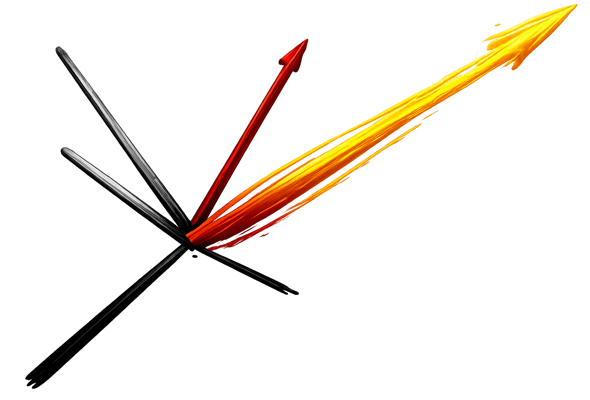

Vigilancia Tecnológica & Inteligencia Competitiva
Planeación y Prospectiva
Transformación Digital
Emprendimiento de Base Tecnológica e Innovación
Investigación y Generación de Conocimiento
Gestión, Seguimiento y Evaluación
Políticas Públicas, Planes y Proyectos
Participación de nuestro equipo fundador en asesorías
0
Boletines de vigilancia científica y patentes
Junto a instituciones de CyT
0
Capacitaciones en
Vigilancia Tecnológica
0
Agendas Prospectivas de Investigación
y Desarrollo Tecnológico
0
Asesorías en
Formulación de Escenarios
0
Agendas y Planes Estratégicos
Prospectivos CTeI departamentales
0
Diseños y coordinación de Unidades
de Vigilancia Tecnológica
0
Modelos institucionales de Prospectiva
y Vigilancia Tecnológica apoyados
Sector formación para el trabajo y gestion territorial
0
Planes de Prospectiva
Territorial y de largo plazo
0
Políticas Públicas
Asesoradas en planeación, seguimiento y evaluación
0
Mediciones de Impacto
Institucional
Propuesta de valor
Anticipamos el futuro, creamos el presente
- Visión estratégica integral:
- Identificamos oportunidades emergentes a través de vigilancia tecnológica e inteligencia competitiva.
- Diseñamos escenarios futuros que guían la toma de decisiones estratégicas.
- Desarrollamos capacidades organizacionales para navegar la incertidumbre.
- Transformación con impacto medible:
- Implementamos metodologías probadas de formulación, seguimiento y evaluación.
- Fortalecemos gerencia orientada a resultados o basada en evidencia.
- Innovación tecnológica aplicada:
- Potenciamos la transformación digital con soluciones de automatización.
- Desarrollamos plataformas y sistemas de información personalizados.
- Integramos tecnología de vanguardia en procesos estratégicos.
- Conocimiento Especializado:
- Generamos investigación aplicada y análisis sectoriales de alto valor.
- Combinamos rigor académico con experiencia práctica.
- Transferimos conocimiento para fortalecer capacidades internas.
Algunas contribuciones clave de nuestro equipo consultor
- La experiencia de nuestro equipo incluye desde aportes al gobierno central colombiano en la formulación de la política nacional de IA y la transformación digital, pasando por la formulación de planes prospectivos de sectores económicos y para entes territoriales; hasta el desarrollo de metodologías de mapeo de impacto adaptables a la diversidad institucional.
Sectores de impacto
- Sector Público: Transformación institucional y desarrollo territorial.
- Empresas Privadas: Estrategia competitiva y innovación organizacional.
- Organizaciones del Conocimiento: Investigación aplicada y transferencia tecnológica.
- Ecosistemas de Innovación: Articulación y fortalecimiento sectorial.
En Prisma Futura, cada proyecto es una oportunidad de construir el mañana que todos necesitamos.